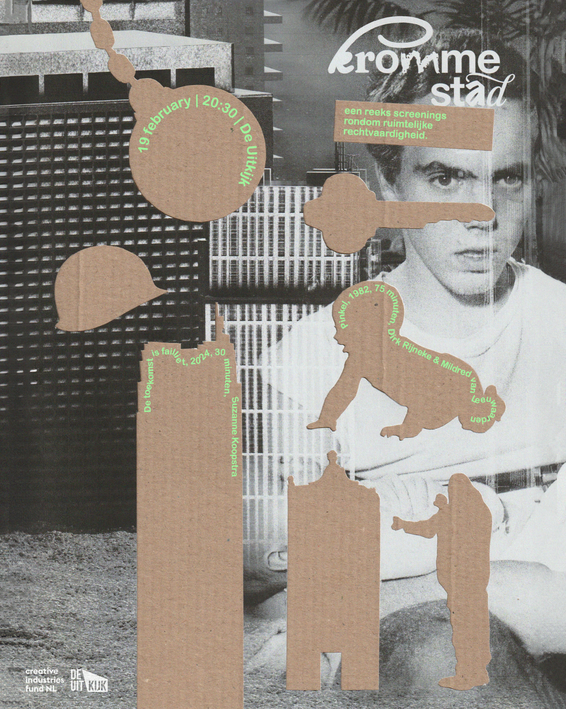
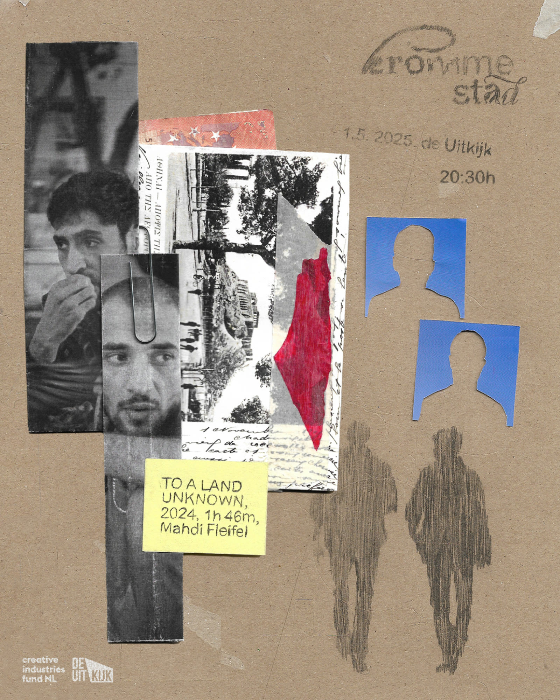
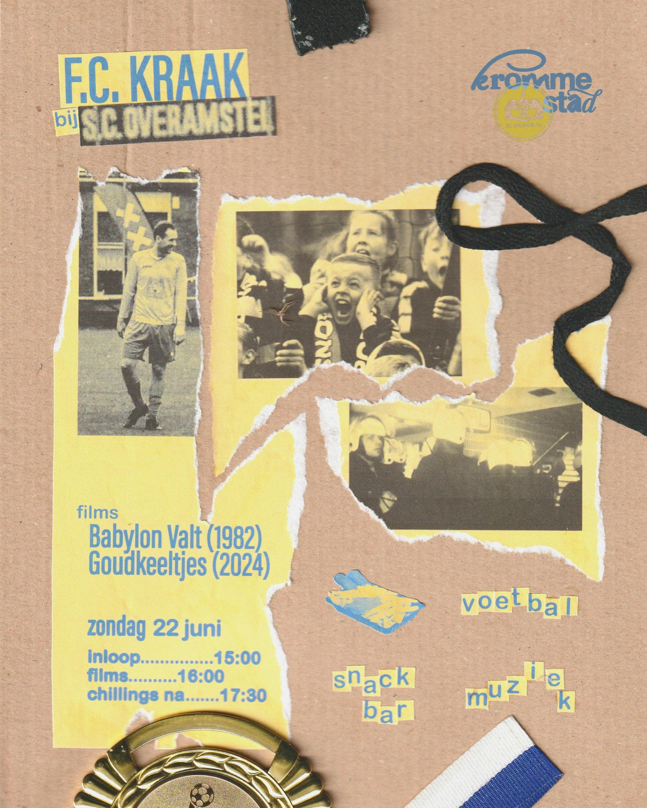
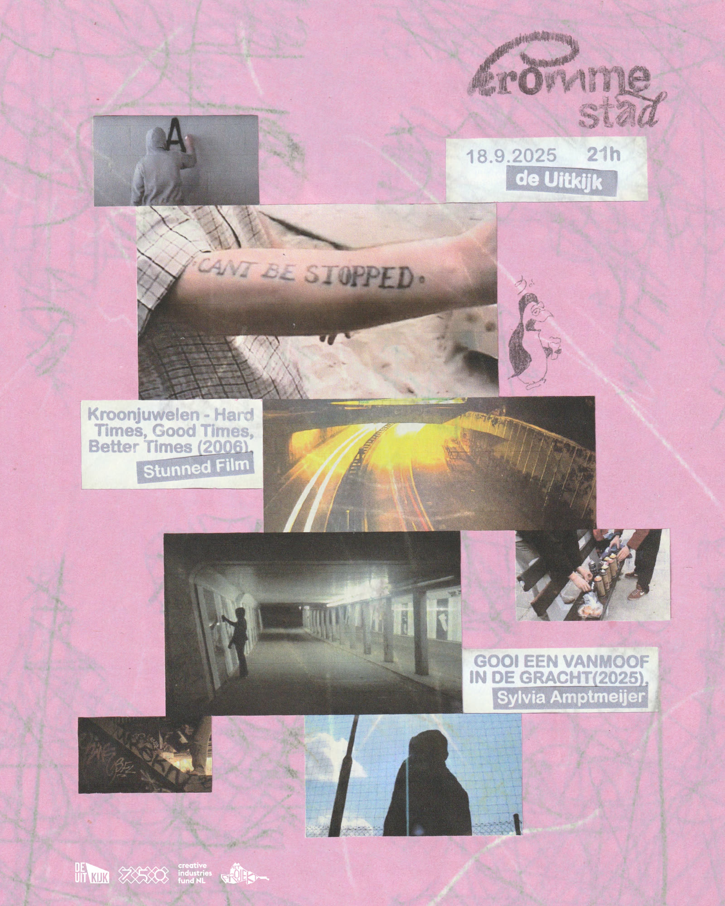
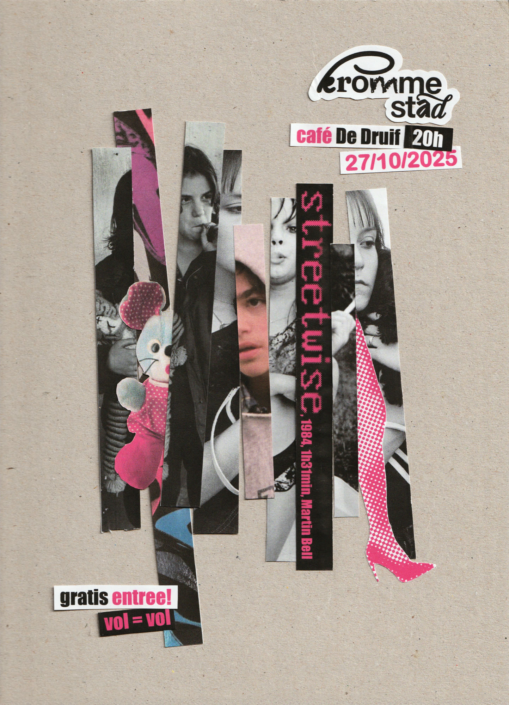
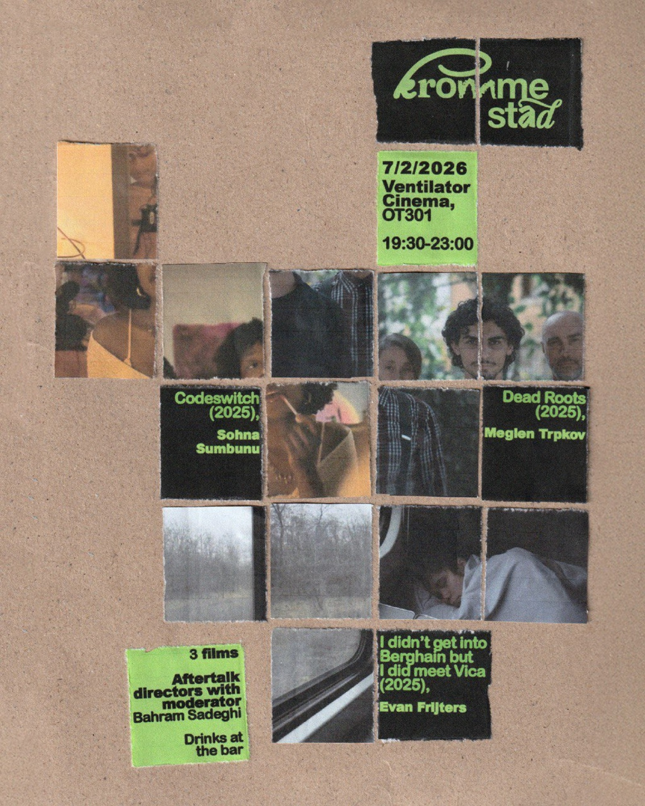
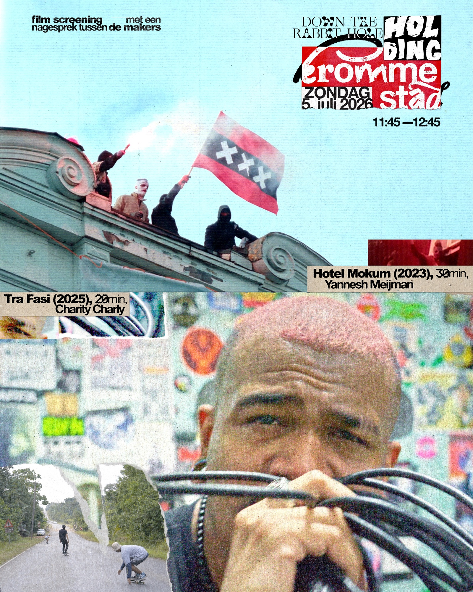

Kromme Stad
inquiries: krommestad@gmail.com
Kromme Stad is an online film archive that uses clips from fiction and documentary films to bring stories of power and resistance within cities to light. In addition to online clips, Kromme Stad also organizes screenings of classic and contemporary films in independent cinemas, squats, and cultural free spaces. Kromme Stad is run by Yannesh Meijman, Maaike van Voorst Vader, and Jonas Matheo.
AN ARCHIVE OF urban filmS / 2025
inquiries: krommestad@gmail.com
→ instagram

ScreeningS
19 february 2025
at De Uitkijk
De Toekomst is Failliet (2024) & Pinkel (1982)
1 may 2025
at De Uitkijk
To A Land Unknown (2024) & Something Amazing is About to Happen (2025)
22 june 2025
at the squatted canteen of SC Overamstel
Babylon Valt (1982) & Goudkeeltjes (2025)
18 september 2025
at De Uitkijk
Kroonjuwelen (2006) & GOOI EEN VANMOOF IN DE GRACHT (2025)
27 october 2025
at De Druif
Streetwise (1983)
07 february 2026
at Ventilator cinema
I didn’t get into Berghain, but I did meet Vica (2025) & Dead Roots (2025)
& Codeswitch (2025)
05 july 2026
at Down the Rabbit Hole Festival
Hotel Mokum (2023) & Tra Fasi (2026)

Credits
Initiated by Yannesh Meijman
Visual Identity by Antonija Vuletic
Assisted by Maaike Vader & Jonas Ganzeveld




